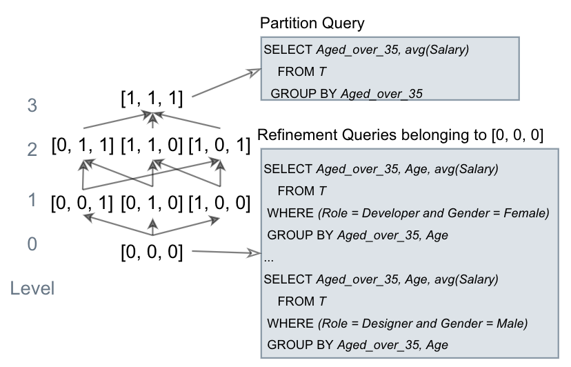
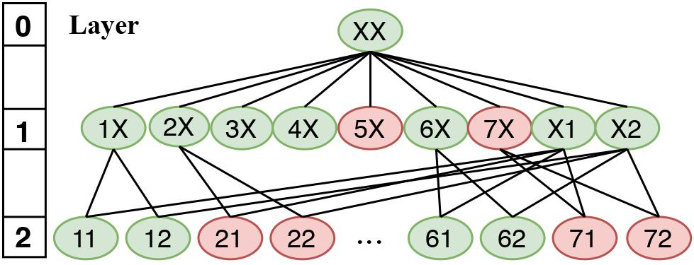

Hi, my name is Yin Lin (林茵 in Chinese). I am a Ph.D. candidate in the Computer Science and Engineering Department at the University of Michigan, Ann Arbor. I consider myself fortunate to be advised by Dr. H. V. Jagadish. I am a member of the Database group. My current research focuses on data equality system preventing misuse and misinterpretation of big data.
I got my bachelor's degree from Shanghai Jiao Tong University in 2019 under the supervision of Dr. Xiaofeng Gao.
Outside of my research and work, I love playing the GO game, badminton and running. I completed the Yangzhou half-marathon in 2016. I also like to play Zheng (A traditional Chinese instrument) and guitar! You can know more about my personal interests in my photo site.
CoRR
VLDB 2022
VLDB 2020
CoRR, 2020, Arxiv/2010.08807
MLG@KDD 2020
DEXA 2018
Computer Science and Engineering (CSE)
Computer Science, School of Electronic Information and Electrical Engineering ( CS )
Software Architecture Group, David R. Cheriton School of Computer ScienceSupervisor:Dr. Meiyappan Nagappan
Teaching Assistant for CS 499, Mathematical Foundations of Computer Science (Spring 2018), Shanghai Jiao Tong University
|  |
On Detecting Cherry-picked Generalizations
|
|  |
Identifying Insufficient Data Coverage in Databases with Multiple Relations
|
 |
R2-Tree data center indexing scheme
|
Outstanding Undergraduate in Shanghai Jiao Tong University
National Scholarship for Studying Abroad, China Scholarship Council
Chun Tsung Scholar from Shanghai Jiao Tong University ( top 50 in SJTU)